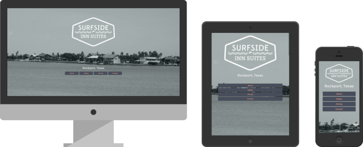

Surfside Inn Suites
September, 2014
I was approached during the summer of 2014 to redesign a website for a hotel in Texas. Putting it mildly, their old website was dated and out of style.
Surfside Inn Suites is in a beautiful location, and I wanted the website to reflect the picturesque area in which the hotel resides. A full screen, greyscale background image for the homepage helps to portray how pretty the surrounding area is, whilst also giving the website an heir of class and modernism.
Rather than opt for the traditional seperate page system most websites offer, the new Surfside Inn Suites website serves up an intuitive full page scrolling system. A bold and charming colour scheme and minimal display of information help to ease the reader through the website.
I also reimagined the logo, which compliments the website with its retro, stamp style appearance.